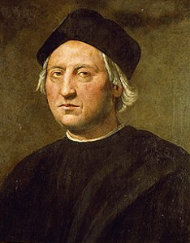

A földrajzi felfedezések kora
A földrajzi felfedezések kora a 15. század-tól, a portugál Tengerész Henrik fellépésétől a 18. század végéig tartott. Ebben az időszakban megtörtént az Európai kultúra kiterjesztése és ezzel kezdetét vette a globalizáció.
A Az európai tengerentúli felfedezések a globális kereskedelem és az európai gyarmati birodalmak felemelkedéséhez vezettek, a régi világot (Európa, Ázsia és Afrika) és az Újvilágot (Amerika és Ausztrália) a Kolumbiai Tőzsde létrehozásával kapcsolták össze, növények, állatok, élelmiszerek, emberi populációk (beleértve a rabszolgák), a fertőző betegségek és a kultúra széles körű átadása a keleti és a nyugati félteke között.
Legnagyobb földrajzi felfedezők
Tengerész Henrik
Portugál herceg, I. János portugál király harmadik fia, Covilhã ura. A földrajzi felfedezések korának egyik legismertebb személyiségévé vált. Afrika nyugati partjait feltáró expedíciói elősegítették Portugália gyarmatosításait.
Bartolomeu Dias
Bartolomeu Dias (olaszos írásmóddal Bartolomeo Diaz) (Algarve, 1450 körül – a Jóreménység fokától délre, 1500. május 29.) portugál hajós és felfedező. Elsőként kerülte meg Afrika legdélebbi csücskét – a Jóreménység-fokát – 1487-88-ban.

Kolumbusz Kristóf
Cristoforo Colombo vagy magyarosított nevén Kolumbusz Kristóf (olaszul: Cristoforo Colombo, portugálul: Cristóvão Colombo, spanyolul: Cristóbal Colón; Genova, Genovai Köztársaság, 1451. augusztus 25. és október 31. között – Valladolid, Kasztíliai Királyság, 1506. május 20.) itáliai származású, a portugál, majd a spanyol korona szolgálatában állt utazó, tengerésztiszt, az amerikai kontinens 1492-es felfedezője.
Marco Polo
Marco Polo (Velence vagy Curzola, 1254. szeptember 15. – Velence, 1324. január 8.) velencei kereskedő, utazó, író, aki a közvélekedés szerint újra felfedezte Kínát Európa számára. Apjával és nagybátyjával 1271-ben indult keletre, és Perzsián keresztül el is jutott Kubiláj mongol nagykán és kínai császár pekingi (akkor Taidù) udvarába, ahol 1275 és 1292 között magas állami hivatalokat viselt; végül 1295-ben tért vissza szülővárosába. 1298-ban a genovaiak fogságába esett, és az ott töltött egy év alatt rabtársának, a pisai Rustichellónak tollba mondta a kalandjait.

Vasco da Gama
1497. július 8-án indította meg első indiai expedícióját Vasco da Gama portugál tengerész, aki I. Mánuel király (ur. 1495-1521) megbízásából, Afrikát megkerülve próbált meg eljutni a – fűszerei révén – mesés gazdagságot rejtő szubkontinensre. Vasco da Gama útja nyolc évtizedes portugál erőfeszítés gyümölcsét hozta meg, és a birodalomépítés új korszakába repítette az ibériai országot.
Vasco Da Gama élete
Willem Barents
Willem Barents, hollandul Willem Barentsz (Hollandia, Nyugati Fríz-szigetek, Terschelling, ?1550. – Oroszország, Novaja Zemlja, 1597. június 20.) holland hajós és felfedező, az északi sarkvidéki expedíciók úttörője.